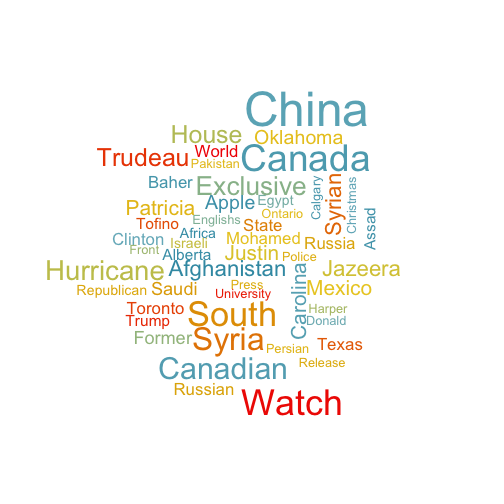
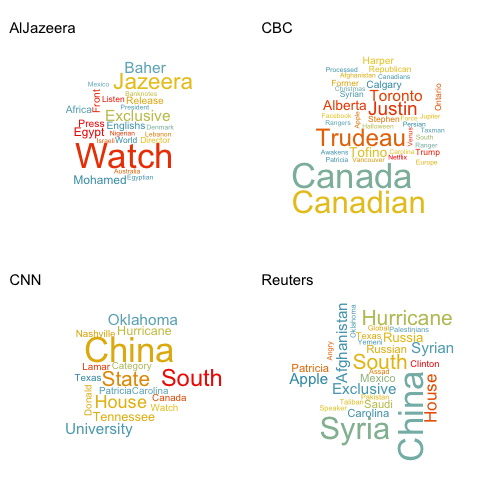

데이터 과학
R 정규표현식과 문자데이터
R 정규표현식에서 정규표현식을 이해했으니, 이를 활용하여 텍스트 데이터를 R에서 처리해본다.
1부 - R 기초 문자열 처리 1 2
시작환경 설정
stringr 팩키지를 설치하지 않았다면 설치하고 관련된 팩키지를 불러온다.
#install.packages("stringr")
library("stringr")
library("dplyr")
library("ggplot2")nchar - 각 문자열 길이를 센다.
test_str <- c("STAT545 is great!", "Wooooo!")
nchar(test_str)[1] 17 7
substr 문자벡터 문자열 부분집합을 뽑아내거나 바꾸기 한다.
1번에서 7번째까지 문자열 요소를 뽑아내자.
substr(test_str, 1, 7)[1] "STAT545" "Wooooo!"
1번에서 7번째까지 문자열 요소를 SCIENCE로 바꾼다.
substr(test_str, 1, 7) <- "SCIENCE"
test_str[1] "SCIENCE is great!" "SCIENCE"
paste - 문자열을 붙이거나 조합한다.
다소 복잡한 함수라, 일반적인 사용례를 살펴보자. sep 매개변수가 구분문자를 정의한다. (기본디폴트 설정으로 한칸 공백).
paste("abc", "efg")[1] "abc efg"
paste("abc", "efg", sep = "")[1] "abcefg"
paste0 함수는 paste(..., sep="") 을 줄여놓은 함수다.
paste0("abc", "efg")[1] "abcefg"
다수 값을 갖는 벡터를 조합하려면, collapse 매개변수로 명세한다:
paste(c("abc", "efg"), c("hij", "klm"), sep = "", collapse = "")[1] "abchijefgklm"
strsplit - 문자열 리스트를 문자열로 쪼갬
예를 들어, 콤마로 구분된 벡터를 다음과 같이 쪼갠다:
x <- c("abc,cbe", "cb,gb,aaa")
strsplit(x, split = ",")[[1]]
[1] "abc" "cbe"
[[2]]
[1] "cb" "gb" "aaa"
strsplit 함수는 리스트를 반환한다. 그래서 하나처럼 다뤄진다. 만약 두번째 요소를 뽑아낸다면 다음과 같이 코딩한다:
strsplit(x, split = ",") %>% lapply(function(x) x[2])[[1]]
[1] "cbe"
[[2]]
[1] "gb"
2부 - R 정규표현식
1부에서 문자데이터 처리 기초를 학습했다. 강력한 문자데이터 처리를 위해서, R 기초 문자데이터 처리기술을 정규표현식과 함께 사용하는 방법을 살펴보자.
R 정규표현식 초간단 정리
POSIX 클래스를 사용해서 \w, \d, \s 문자 클래스를 참조한다. 이들 문자클래스는 함수에도 동일하지만, 좀더 가독성이 좋다고 일부 개발자는 생각한다.
?regex도움말을 타이핑해서 전체를 볼수 있다. 다음에 일부 예제가 나와있다.- \w = [[:alnum:]]
- \d = [[:digit:]]
- \s = [[:space:]]
특수문자를 탈출시키거나 문자클래스를 사용하는 경우, 문자 앞에 이중 확장기호를 사용한다. 예를 들어, * 대신에 \w**.
news_tweets 데이터 불러 읽어들이기
4 개 방송사(CBC, CNN, Al Jazeera, Reuters)에서 나온 지난주 트위터 데이터를 불러 읽어들인다. twitteR 팩키지를 사용해서 트위터 트윗을 수집했는데, twitteR은 트위터 REST API 인터페이스다.
news_tweets <- read.delim("https://www.dropbox.com/s/cbgcpkizun51wbk/news_tweets.txt?dl=1", header = TRUE, stringsAsFactors = FALSE, sep = "\t", quote = "", allowEscapes = TRUE)
glimpse(news_tweets)Observations: 858
Variables: 4
$ user_name (chr) "CBC", "CBC", "CBC", "CBC", "CBC", "CBC", "CBC", "CB...
$ created (chr) "2015-10-28 14:54:49", "2015-10-28 14:54:48", "2015-...
$ retweets (int) 30, 8, 10, 51, 10, 15, 17, 10, 24, 6, 16, 23, 13, 17...
$ text (chr) "Officer who flipped student in desk to be let go, r...
user_name= 트위터 사용자명(축약)created= 트윗된 날짜retweets= 현재까지 다시 트윗된 횟수text= 트윗 텍스트 원문
grep - 텍스트 벡터에서 패턴 찾아내기
가장 기초적인 작업은 정규표현식으로 문자벡터를 검색하는 것이다.
grep은 정규표현식과 문자벡터를 입력값으로 받아 매칭되는 인덱스를 반환한다.
정규표현식을 사용해서 news_tweets에 해쉬태그를 포함한 트윗을 찾아보자. 해쉬태그는 # 다음에 알파벳숫자가 하나 이상 따라온다. 예를 들어, #rstats, #Canada 등
# 정규표현식으로 표현하는 두가지 방법
hastag_pattern <- "#\\w+"
hastag_pattern <- "#[[:alnum:]]+"
grep(hastag_pattern, news_tweets$text) [1] 5 7 9 11 175 206 260 269 274 276 277 279 282 287 292 305 308
[18] 309 310 311 321 327 333 338 340 343 348 349 351 358 360 362 364 366
[35] 367 369 371 386 387 388 397 404 405 407 408 411 422 425 434 435 437
[52] 439 440 441 442 453 455 457 459 460 464 467 469 471 487 500 502 503
[69] 505 507 508 510 512 513 514 515 516 517 518 520 521 522 523 530 531
[86] 532 535 536 537 540 541 542 543 544 545 546 548 549 550 551 552 553
[103] 554 555 556 558 559 560 561 562 563 564 567 568 569 574 575 577 578
[120] 579 580 581 582 583 584 585 586 588 589 591 592 593 594 596 597 598
[137] 599 600 601 602 603 604 605 606 607 608 611 612 613 615 619 620 621
[154] 622 623 625 634 639 640 641 642 644 646 647 648 649 650 656 657 658
[171] 659 660 662 663 664 679 680 691 692 693 724 725 738 770 784 795 817
[188] 818 819 826 829 830 831 832
value=TRUE를 설정하면 인덱스에 딸린 벡터 실제값을 반환한다.
grep(hastag_pattern, news_tweets$text, value = TRUE) %>% head(n = 5)[1] "Alberta will try to spend its way out of a slump, but it also needs oil to recover https://t.co/x2h24rKI39 #abbudget https://t.co/ANkckdlb7m"
[2] "Volkswagen posted 1st quarterly loss in 15 years, as costs from emissions scandal mount https://t.co/Z9WEkQ96km #VW https://t.co/VaDVd5Mw2D"
[3] "#Tesla's new Autopilot software means self-driving cars are already on Canadian roads https://t.co/3ksvzhVvEX https://t.co/WsM8s3T73R"
[4] "Canada Post's door-to-door delivery debate reignites as Liberals set to take office https://t.co/3pXZ1BHtCe #cdnpoli https://t.co/aM4UvkVzRe"
[5] "On @CBCMorningShow: Teal Pumpkin Project helps B.C. kids with food allergies feel 'safe' on #Halloween https://t.co/vzVtMSinIh"
invert = TRUE를 설정해서, 해쉬태그가 없는 검색결과로 반전할 수 있다:
grep(hastag_pattern, news_tweets$text, value = TRUE, invert = TRUE) %>% head(n = 5)[1] "Officer who flipped student in desk to be let go, report says https://t.co/yRcQG35zXn https://t.co/LgXCbaDtjk"
[2] "Apple Pay coming to Canada this year with American Express partnership https://t.co/Whc2g3lLzP https://t.co/xru2gnWdrg"
[3] "Renovation nation: Canadians may spend record $53 billion fixing their homes this year https://t.co/lNGZtIuuih https://t.co/KrCQ1rh8go"
[4] "Cosmetic ear cropping banned by B.C. veterinarians https://t.co/wlsXmOmBFC https://t.co/E9hFezNJZe"
[5] "'I wouldn't mind to go back to school': No teacher, no students and a vicious cycle https://t.co/I62zrvwTlZ https://t.co/BlKtD9uGQx"
grepl - 논리 패턴 매칭
grepl (grep logical)은 grep과 유사하지만, 벡터 모든 요소에 대한 TRUE 혹은 FALSE 값을 반환한다.
hastag_pattern <- "#[[:alnum:]]+"
grepl(hastag_pattern, news_tweets$text) %>% head(n = 10) [1] FALSE FALSE FALSE FALSE TRUE FALSE TRUE FALSE TRUE FALSE
dplyr 팩키지 filter로 grepl을 사용해서 정규표현식으로 행을 필터링한다. url을 포함한 트윗을 필터링해서 뽑아낸다:
# url regex
url_pattern <- "http[s]?://[^ ]+"
# filter news tweets using grepl
hashtag_tweets <- news_tweets %>%
filter(grepl(url_pattern, news_tweets$text))
# print the first 6 rows of the resulting data frame
head(hashtag_tweets) user_name created retweets
1 CBC 2015-10-28 14:54:49 30
2 CBC 2015-10-28 14:54:48 8
3 CBC 2015-10-28 14:40:10 10
4 CBC 2015-10-28 14:40:08 51
5 CBC 2015-10-28 14:30:29 10
6 CBC 2015-10-28 14:25:18 15
text
1 Officer who flipped student in desk to be let go, report says https://t.co/yRcQG35zXn https://t.co/LgXCbaDtjk
2 Apple Pay coming to Canada this year with American Express partnership https://t.co/Whc2g3lLzP https://t.co/xru2gnWdrg
3 Renovation nation: Canadians may spend record $53 billion fixing their homes this year https://t.co/lNGZtIuuih https://t.co/KrCQ1rh8go
4 Cosmetic ear cropping banned by B.C. veterinarians https://t.co/wlsXmOmBFC https://t.co/E9hFezNJZe
5 Alberta will try to spend its way out of a slump, but it also needs oil to recover https://t.co/x2h24rKI39 #abbudget https://t.co/ANkckdlb7m
6 'I wouldn't mind to go back to school': No teacher, no students and a vicious cycle https://t.co/I62zrvwTlZ https://t.co/BlKtD9uGQx
gsub - 찾기와 바꾸기
정규표현식으로 매칭하고, 매칭된 것을 미리 지정한 문자열로 바꾼다.
gsub 함수는 정규표현식, 바꾸기 문자열과, 대상문자열을 입력 인자로 받는다. gsub 함수는 바꾸기 문자열로 교체된 모든 모든 문자열 벡터를 반환한다.
gsub 함수의 일반적인 용도는 텍스트 정제다. 예를 들어, 트윗에서 모든 url을 제거하자:
# reminder of what a tweet looks like
news_tweets$text[20][1] "Door-to-door mail delivery: Charge for it, scrap it or subsidize it? https://t.co/4LYaSgFkd5 https://t.co/7EaA7jXWQW"
# the url regex
url_pattern <- "http[s]?://[[:alnum:].\\/]+"
# replace all matches to the above regex with nothing ""
clean_tweets <- gsub(pattern = url_pattern, replacement = "", news_tweets$text)
clean_tweets[20][1] "Door-to-door mail delivery: Charge for it, scrap it or subsidize it? "
gsub 함수를 사용해서 부가되거나 끝에 딸려오는 공백문자를 제거한다:
# 공백 2개 혹은 끝에 딸려오는 공백 제거 정규표현식
trailing_space <- "[ ]{2,}|[ ]+$"
clean_tweets <- gsub(pattern = trailing_space, replacement = "", clean_tweets)
# a clean tweet!
clean_tweets[20][1] "Door-to-door mail delivery: Charge for it, scrap it or subsidize it?"
마지막으로, polit로 시작되는 모든 문자를 ballons으로 바꾸기 한다:
먼저 polit으로 시작되는 관심 패턴을 포함하는 트윗을 뽑아낸다:
poli_pattern <- "[Pp]olit[[:alnum:]]+"
poli_pattern %>% grep(clean_tweets, value = TRUE) [1] "Website that archives politicians' deleted tweets may return"
[2] "Tom Mulcair says niqab position was a defining moment of his political career"
[3] "Tom Mulcair says niqab position was a defining moment of his political career"
[4] "Anaylsis: Triple deleted emails shed light on troubling political culture"
[5] ".@HillaryClinton to @StephenAtHome: I would let the big banks fail http://via @CNNPolitics"
[6] "Celebrities and politicians wish @HillaryClinton a \"Happy Birthday\""
[7] ".@HillaryClinton's campaign is not yet carbon neutral, despite pledgevia @CNNPolitics"
[8] "WATCH ONLINE: How leftist politics is challenging conventional news coverage@AJListeningPost"
[9] "Meet @HenshawKate, Nollywood star turned politician on #AJMyNigeria#Nigeria"
[10] "\"We should get to a point where politicians fear voters, rather than the other way round.\" @MmusiMaimane at #DMNandosGathering"
이제 이를 조합해서 polit로 시작되는 모든 문자를 ballons으로 바꾼다:
poli_pattern %>% gsub(replacement = "balloons", clean_tweets) %>% grep("balloons", ., value = TRUE) [1] "Website that archives balloons' deleted tweets may return"
[2] "Tom Mulcair says niqab position was a defining moment of his balloons career"
[3] "Tom Mulcair says niqab position was a defining moment of his balloons career"
[4] "Anaylsis: Triple deleted emails shed light on troubling balloons culture"
[5] ".@HillaryClinton to @StephenAtHome: I would let the big banks fail http://via @CNNballoons"
[6] "Celebrities and balloons wish @HillaryClinton a \"Happy Birthday\""
[7] ".@HillaryClinton's campaign is not yet carbon neutral, despite pledgevia @CNNballoons"
[8] "WATCH ONLINE: How leftist balloons is challenging conventional news coverage@AJListeningPost"
[9] "Meet @HenshawKate, Nollywood star turned balloons on #AJMyNigeria#Nigeria"
[10] "\"We should get to a point where balloons fear voters, rather than the other way round.\" @MmusiMaimane at #DMNandosGathering"
3부 - stringr 팩키지
R에 다른 모든 것처럼, Hadley Wickham이 문자열처리도 효과적이고 효율적으로 다루고자 많은 기여를 했다. 문자열에 대한 기여결과가 stringr 팩키지로 구현되었다. 기존에 존재하던 많은 함수를 더 멋진 구문으로 구현했다. 문자열 처리 팩키지를 dplyr과 함께 사용해서 트윗데이터에 대한 기본적인 어휘분석을 수행한다!
트윗에서 “단어가 아닌” 모든 텍스트를 정제한다. 정제를 시작해보자:
- URL:
http[s]?://[[:alnum:]].\\/]+ - 트위터 사용자명 (예를 들어, @CNN):
@[\\w]* - 해쉬태그(#rstats):
#[\\w]* - 소유격(’s) :
's
- 이상한 유니코드/html 태그 (예를 들어,
<.*>
먼저 제거하고자 하는 각각에 대한 정규표현식을 작성한다. 그리고 나서 "|" 연산자로 조합한다. (정규표현식에서 “or”, 또는 의미를 갖는다.)
stuff_to_remove <- c("http[s]?://[[:alnum:].\\/]+", "@[\\w]*", "#[\\w]*", "<.*>", "'s")
stuff_to_remove <- paste(stuff_to_remove, sep = "|", collapse="|")(gsub 같은) str_replace_all 함수를 사용해서 트윗 텍스트를 정제한다.
clean_tweets <- str_replace_all(news_tweets$text, stuff_to_remove, "")
clean_tweets[20:25][1] "Door-to-door mail delivery: Charge for it, scrap it or subsidize it? "
[2] "Alberta budget: Can the province spend its way to prosperity? "
[3] "Did 3rd-party groups sway voters during federal election? "
[4] "Ready or not, self-driving cars are cruising on Canadian roads "
[5] "How submarine cables became the latest Russia-U.S. issue "
[6] "Top 10 Trending Halloween Costumes "
잘 동작되지만, 꼬리부분에 공백문자가 눈에 띈다! 다행히도, stringr 팩키지에는 이런 작업을 위한 전용함수가 존재한다. str_trim 함수는 앞쪽과 뒤쪽 공백문자를 제거한다:
clean_tweets <- str_trim(clean_tweets)
clean_tweets[20:25][1] "Door-to-door mail delivery: Charge for it, scrap it or subsidize it?"
[2] "Alberta budget: Can the province spend its way to prosperity?"
[3] "Did 3rd-party groups sway voters during federal election?"
[4] "Ready or not, self-driving cars are cruising on Canadian roads"
[5] "How submarine cables became the latest Russia-U.S. issue"
[6] "Top 10 Trending Halloween Costumes"
다음으로, str_extract_all 함수를 사용해서 전체 데이터셋에서 모든 단어를 추출한다. (grep(...value=TRUE)처럼)
tweet_words <- str_extract_all(clean_tweets, "[A-Za-z]+")
head(tweet_words)[[1]]
[1] "Officer" "who" "flipped" "student" "in" "desk" "to"
[8] "be" "let" "go" "report" "says"
[[2]]
[1] "Apple" "Pay" "coming" "to" "Canada"
[6] "this" "year" "with" "American" "Express"
[11] "partnership"
[[3]]
[1] "Renovation" "nation" "Canadians" "may" "spend"
[6] "record" "billion" "fixing" "their" "homes"
[11] "this" "year"
[[4]]
[1] "Cosmetic" "ear" "cropping" "banned"
[5] "by" "B" "C" "veterinarians"
[[5]]
[1] "Alberta" "will" "try" "to" "spend" "its" "way"
[8] "out" "of" "a" "slump" "but" "it" "also"
[15] "needs" "oil" "to" "recover"
[[6]]
[1] "I" "wouldn" "t" "mind" "to" "go"
[7] "back" "to" "school" "No" "teacher" "no"
[13] "students" "and" "a" "vicious" "cycle"
오키도키! 상위 15 개 단어를 뽑아내자.
word_counts <- unlist(tweet_words) %>% table %>% data.frame
names(word_counts) <- c("word", "count")
word_counts %>%
arrange(count) %>%
top_n(15) Selecting by count
word count
1 after 45
2 as 45
3 U 45
4 from 48
5 S 48
6 is 52
7 says 54
8 with 54
9 at 71
10 and 74
11 a 105
12 for 115
13 on 124
14 the 161
15 of 165
16 in 221
17 to 303
흠… 정규표현식으로 사용해서 대문자로 시작되는 문자로 적어도 길이가 4자 이상되는 문자만 잡아내자.
tweet_words <- str_extract_all(clean_tweets, "[A-Z][a-z]{4,}")
word_counts <- unlist(tweet_words) %>% table %>% data.frame
names(word_counts) <- c("word", "count")
word_counts %>%
top_n(25)%>%
arrange(desc(count)) word count
1 China 31
2 Canada 23
3 Watch 22
4 South 21
5 Syria 19
6 Canadian 18
7 Hurricane 16
8 Exclusive 15
9 House 14
10 Trudeau 14
11 Afghanistan 12
12 Jazeera 12
13 Syrian 12
14 Carolina 11
15 Justin 11
16 Mexico 11
17 Patricia 11
18 Apple 10
19 Oklahoma 10
20 Former 9
21 Saudi 9
22 Baher 8
23 Clinton 8
24 Mohamed 8
25 Russia 8
26 Russian 8
27 State 8
28 Texas 8
29 Toronto 8
30 World 8
거의 작업을 잘 마무리한 것으로 보인다. 재미로 단어 구름(word cloud)을 만들어보자.
#install.packages("wordcloud")
#install.packages("wesanderson")
library("wordcloud")
library("wesanderson")
pal <- wes_palette(name = "Zissou", 51, type ="continuous") %>% as.character()
word_counts %>%
top_n(50) %>%
with(wordcloud(word, count, ordered.colors = TRUE, color = pal, use.r.layout = TRUE))
방송사별로 쪼개서 트윗에 대한 단어 구름을 만들어 보자.
news_clean_tweets <- news_tweets
news_clean_tweets$text <- clean_tweets
words_df <- news_clean_tweets %>%
group_by(user_name) %>%
do(words = str_extract_all(.$text, "[A-Z][a-z]{4,}"))
par(mfrow = c(2,2))
for (i in 1:4){
word_counts <- unlist(words_df[i, 2]) %>% table %>% data.frame
names(word_counts) <- c("word", "count")
word_counts %>%
top_n(50) %>%
with(wordcloud(word, count, ordered.colors = TRUE,
color = wes_palette(name = "Zissou", nrow(.), type ="continuous"),
scale = c(3.5, 0.15)))
text(0, 0.9, words_df$user_name[i], cex = 1.5, adj = c(0, 0))
}